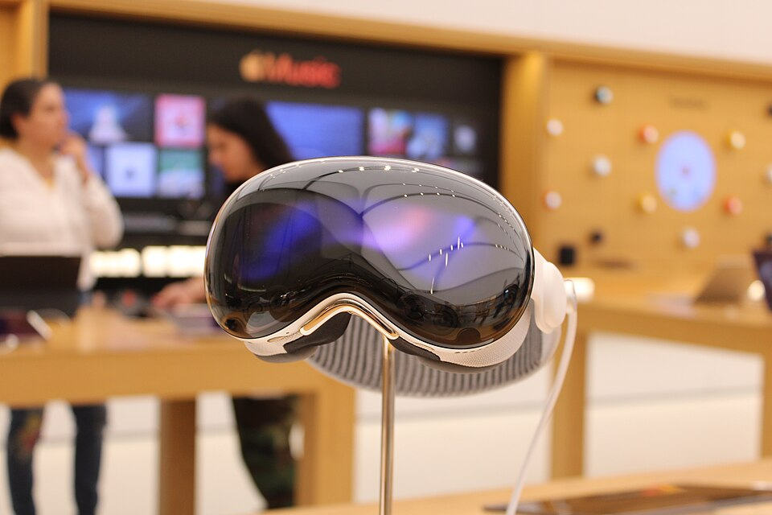
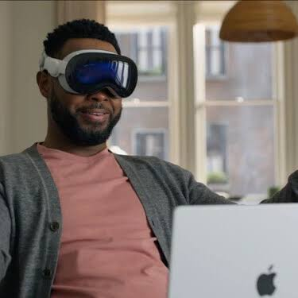
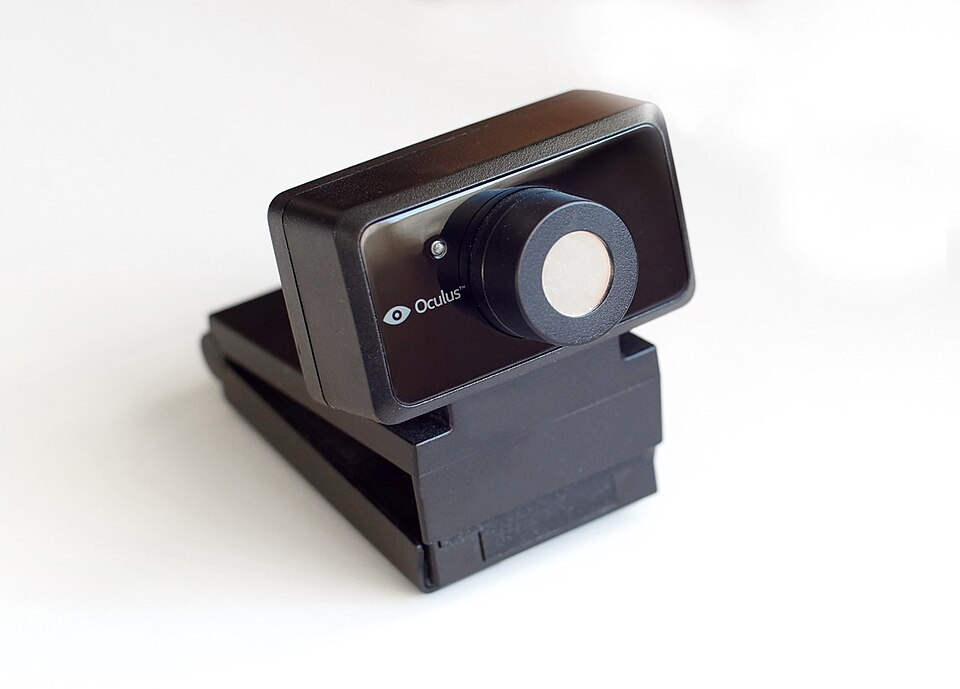

Mirar
Cámaras infrarrojas y LED dentro del visor siguen los ojos. El elemento que miras se resalta antes de que hagas nada, lo que funciona como retroalimentación inmediata.
Fundamentos de Interacción Persona-Ordenador
Un ordenador que se controla con la mirada, las manos y la voz. Sin ratón, sin teclado obligatorio y sin una pantalla que mirar: el entorno es la pantalla.
Lanzamiento: 2 de febrero de 2024 · Actualizado con chip M5 en octubre de 2025

Durante cincuenta años interactuar con un ordenador ha significado traducir lo que queremos hacer a un lenguaje que la máquina entiende: teclear, apuntar con un cursor, pulsar. Las gafas Vision Pro intentan romper esa traducción. Señalas algo mirándolo, lo seleccionas juntando dos dedos y dictas con la voz. Es la interacción natural llevada al límite.
Me parece un dispositivo ideal para esta asignatura porque reúne en un solo producto casi todos los conceptos que hemos visto: modalidades de entrada, retroalimentación, affordances, accesibilidad, carga cognitiva y los límites de la ergonomía.
Es un dispositivo actual. Se presentó en 2023, salió a la venta en febrero de 2024 y en octubre de 2025 recibió una renovación con un chip más potente. Sigue siendo referencia sobre hacia dónde va la interacción persona-ordenador.
Tres canales de entrada que se combinan, más una salida pensada para no aislar a la persona.
Cámaras infrarrojas y LED dentro del visor siguen los ojos. El elemento que miras se resalta antes de que hagas nada, lo que funciona como retroalimentación inmediata.
Las cámaras exteriores detectan las manos aunque estén apoyadas en el regazo. Juntar índice y pulgar equivale a un clic; arrastrar y deslizar sustituye a la rueda y al desplazamiento táctil.
El dictado y los comandos de voz cubren la escritura y la búsqueda. Para teclear mucho se puede conectar un teclado físico o escribir en el aire sobre un teclado virtual.

La salida combina dos pantallas micro-OLED de unos 23 millones de píxeles entre las dos, audio espacial y EyeSight: una pantalla exterior que muestra los ojos del usuario a quien tiene alrededor. Es un detalle de IPO curioso, porque resuelve un problema social (¿me está mirando?) y no técnico.
La mejora no está solo en la tecnología: está en que la persona se adapta menos a la máquina y la máquina se adapta más a la persona.
Quien no puede usar bien las manos, un ratón o un teclado puede controlar el dispositivo con la mirada, la voz o el movimiento de la cabeza. Es la ayuda más importante en términos de accesibilidad.
Incluye lector de pantalla (VoiceOver), ampliación y ajustes de contraste y tamaño de texto. Aun así, no es una solución completa para todas las personas ciegas o con muy poca visión.
Cirujanos, técnicos o ingenieros pueden consultar información o planos sin tocar un teclado ni dejar de mirar su tarea.
Ver un modelo en 3D a tamaño real, o rodearlo, se entiende mejor que verlo plano en una pantalla. Ayuda en educación, arquitectura y diseño de producto.
Para la IPO, un dispositivo es accesible cuando mucha gente distinta puede usarlo sin ayuda. Estos son los problemas concretos que Vision Pro ayuda a resolver.
Problema: una persona con temblores, parálisis o poca fuerza en las manos no puede apuntar ni pulsar con precisión.
Cómo lo soluciona: permite controlar el cursor con los ojos, la cabeza o la muñeca, y ofrece control por voz, control por interruptores y selección por permanencia de la mirada.
Qué mejora: pasa de depender de otra persona a usar el equipo de forma autónoma.
Problema: leer textos pequeños en una pantalla fija cansa o resulta imposible.
Cómo lo soluciona: texto ampliable, zoom, lector de pantalla (VoiceOver) y ventanas enormes que se acercan sin cambiar de monitor.
Qué mejora: el tamaño de lo que se ve se adapta a la persona, y no al revés.
Problema: mantener los brazos levantados o una postura rígida produce fatiga, sobre todo en lesiones por esfuerzo repetido.
Cómo lo soluciona: los gestos se hacen con las manos relajadas, apoyadas en el regazo, y la mirada hace de puntero.
Qué mejora: menos esfuerzo físico por tarea y sesiones más cómodas.
Problema: depender solo del sonido para recibir avisos o seguir una conversación.
Cómo lo soluciona: subtítulos, ajustes de audio y señales visuales, entre otras opciones.
Qué mejora: la información llega por más de un canal.
Un escritorio con monitor obliga a sentarse en un punto concreto. Aquí las ventanas aparecen delante de la persona, sentada, tumbada o en silla de ruedas.
Pulsar teclas pequeñas o apuntar con un ratón es difícil. Con la mirada y la voz se puede elegir y escribir sin tocar nada.
En una habitación pequeña o en un lugar sin pantalla, aparece una pantalla grande virtual que se coloca y se ajusta donde convenga.
Menús, atajos y combinaciones de teclas son difíciles de recordar. Mirar y pellizcar son gestos naturales que se aprenden en minutos.
El vídeo inmersivo y los entornos virtuales permiten ver lugares y eventos a los que cuesta llegar físicamente.
Durante décadas, la accesibilidad se resolvía con aparatos adicionales, muchas veces caros, para adaptar una persona a un ordenador pensado para otras. Aquí el sistema trae varias formas de control integradas desde el principio. Es una idea de diseño universal: se ofrecen varios caminos y cada persona elige el suyo.
Además se cumple lo que en IPO se llama el efecto bordillo: lo que nace para quienes más lo necesitan acaba siendo útil para todos, como ocurrió con los bordillos rebajados de las aceras. Controlar con la voz o la mirada también ayuda a quien tiene las manos ocupadas o está cansado.
Vision Pro no sustituye a un único aparato. Hereda ideas de varias generaciones de dispositivos de interacción y de realidad virtual.
Douglas Engelbart presentó el ratón en 1968 y permitió apuntar sobre una pantalla. Vision Pro sustituye ese puntero por la mirada, que es más rápida que mover la mano.
A quién ayudó: Personas sin conocimientos técnicos: apuntar con un cursor es más intuitivo que memorizar órdenes escritas.
Ivan Sutherland construyó el primer visor de realidad aumentada, tan pesado que colgaba del techo. Es el ancestro directo de las gafas actuales, que ahora caben en la cabeza.
A quién ayudó: Investigadores. Sentó las bases de los simuladores y de la realidad aumentada actual.

Xerox Alto y después Macintosh popularizaron ventanas, iconos y menús. Vision Pro conserva la metáfora de ventana, pero la saca del rectángulo del monitor.
A quién ayudó: Al público general: ventanas e iconos hicieron que el ordenador dejara de ser solo cosa de especialistas.
El iPhone eliminó el ratón y permitió tocar directamente. Vision Pro da un paso más: ya ni siquiera hace falta tocar nada físico.
A quién ayudó: Niños, personas mayores y quienes nunca habían usado un ratón, porque tocar es lo más natural. También facilitó el uso en movilidad.
Microsoft demostró que se podía controlar un juego con el cuerpo, aunque con poca precisión. El seguimiento de manos de Vision Pro es mucho más fino y tolera que las manos estén relajadas.
A quién ayudó: Jugadores sin mando y personas con movilidad reducida. También se probó en rehabilitación física.
Oculus Rift, HTC Vive y Meta Quest trajeron la realidad virtual a los hogares, pero con mandos en las manos y aislando por completo del entorno.
A quién ayudó: Jugadores y, en otros ámbitos, formación con simuladores y terapias, como el tratamiento de fobias.

Vision Pro elimina los mandos, mezcla lo real con lo virtual mediante cámaras de paso (passthrough) con muy poco retardo y usa ojos y manos como entrada principal.
A quién ayudó: Personas con discapacidad motriz (control con ojos y voz), profesionales con las manos ocupadas y estudiantes. Está desarrollado en la sección anterior.
Mi conclusión: Vision Pro marca hacia dónde va la interacción persona-ordenador y aporta sobre todo a la accesibilidad, porque permite que más personas usen un ordenador a su manera. Su principal lección es que la mejor interfaz es la que desaparece.